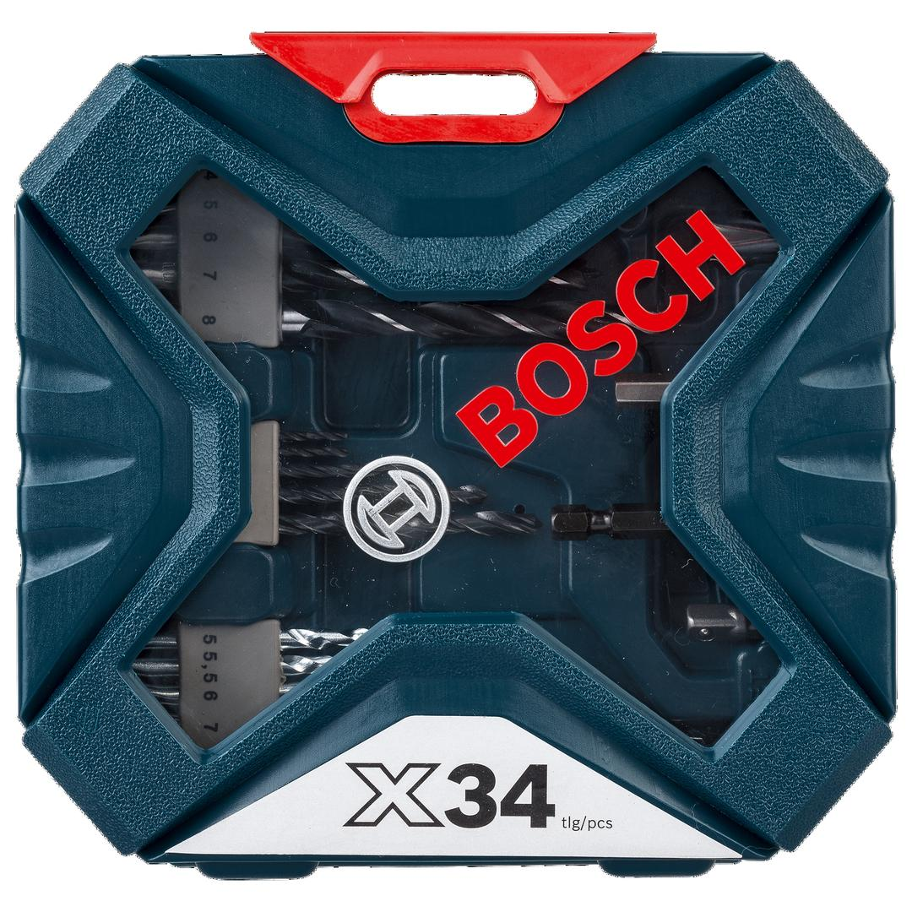
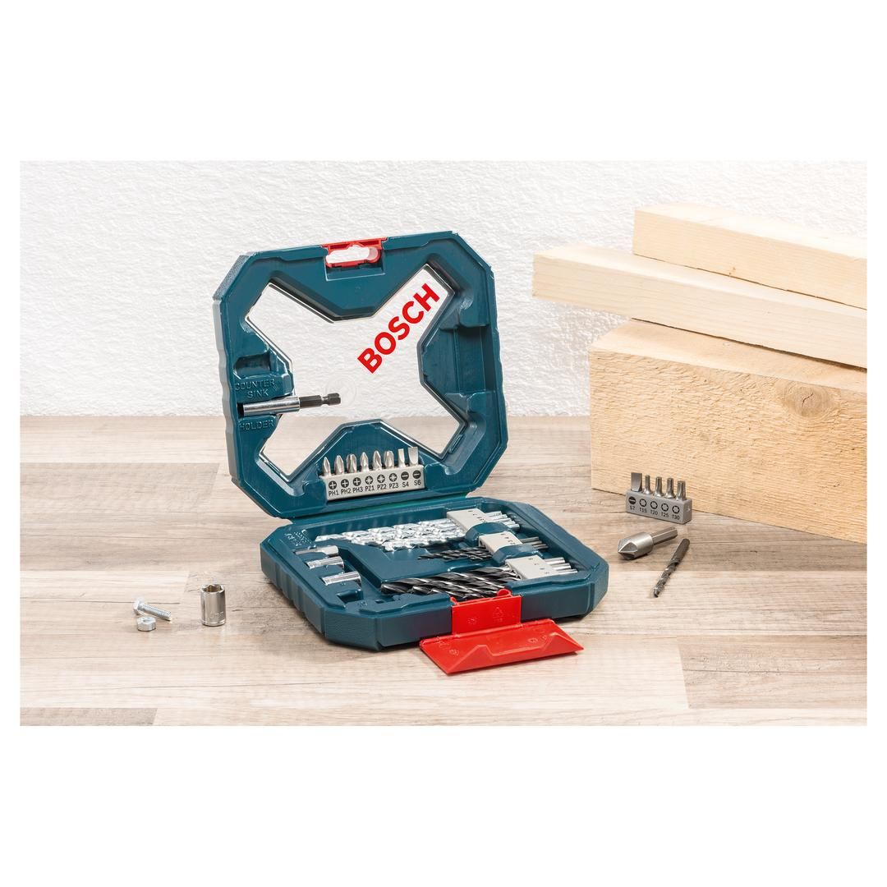

2607017405


| Contents |
5 HSS metal drill bits, Ø 2-5 mm
5 masonry drill bits, Ø 5-8 mm
5 wood drill bits, Ø 4-8 mm
13 screwdriver bits L = 25 mm
PH 1/2/3
PZ 1/2/3
S 4/6/7
T 15/20/25/30
3 nutsetters, Ø 7/8/10 mm
1 adapter for nutsetters
1 universal holder, magnetic
1 countersink |
| Packaging |
Plastic case with window and printed card |
| Dimensions (lxwxh) |
172 x 46 x 164 mm |
| Weight |
0.536 kg |
| Pack quantity |
34 Pcs |
| Minimum order quantity |
1 Pcs |
DIY with Bosch quality: Drilling and screwdriving made easy.